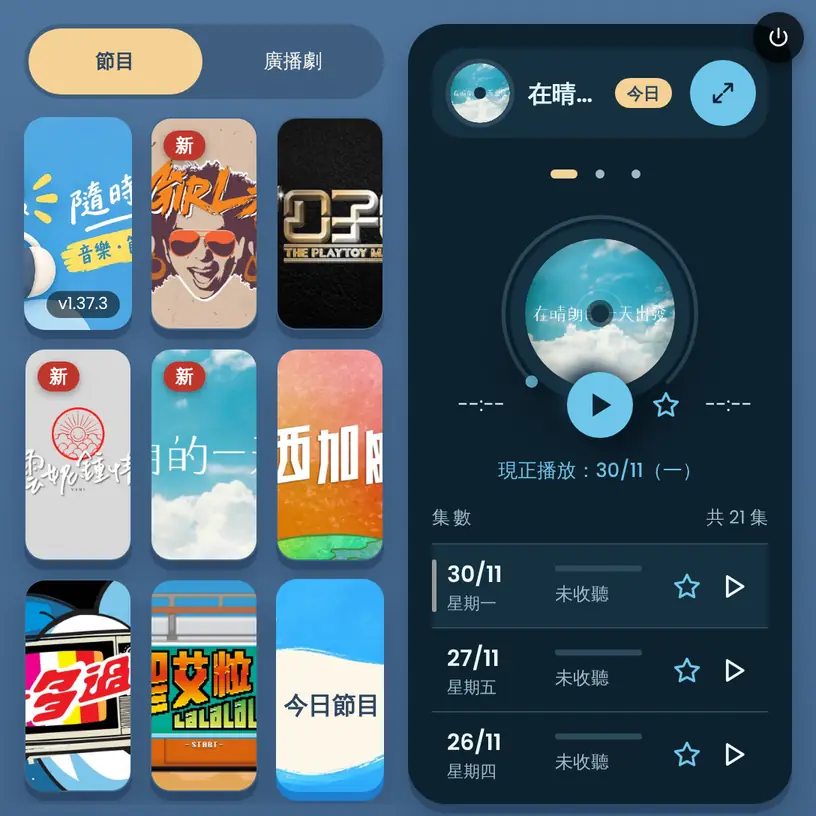
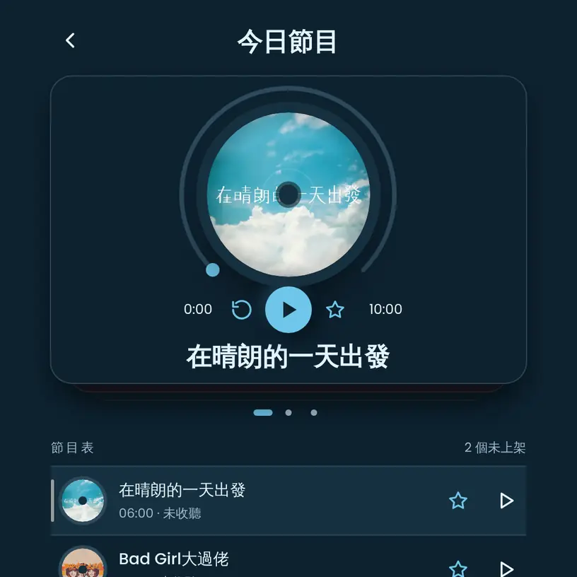
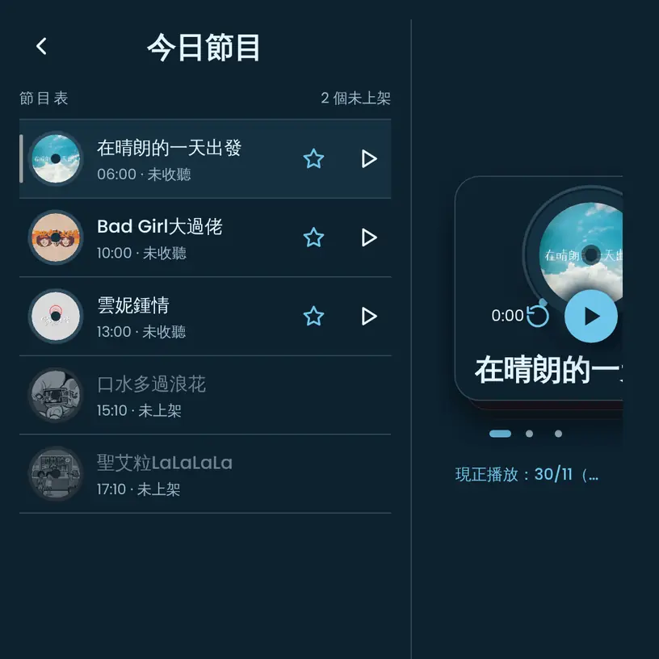
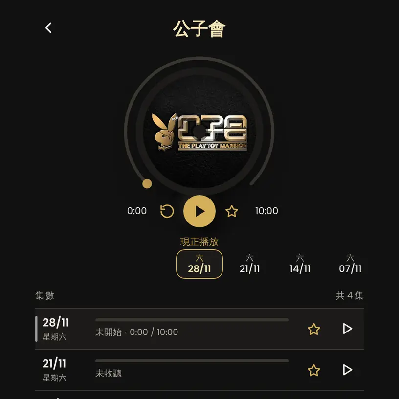
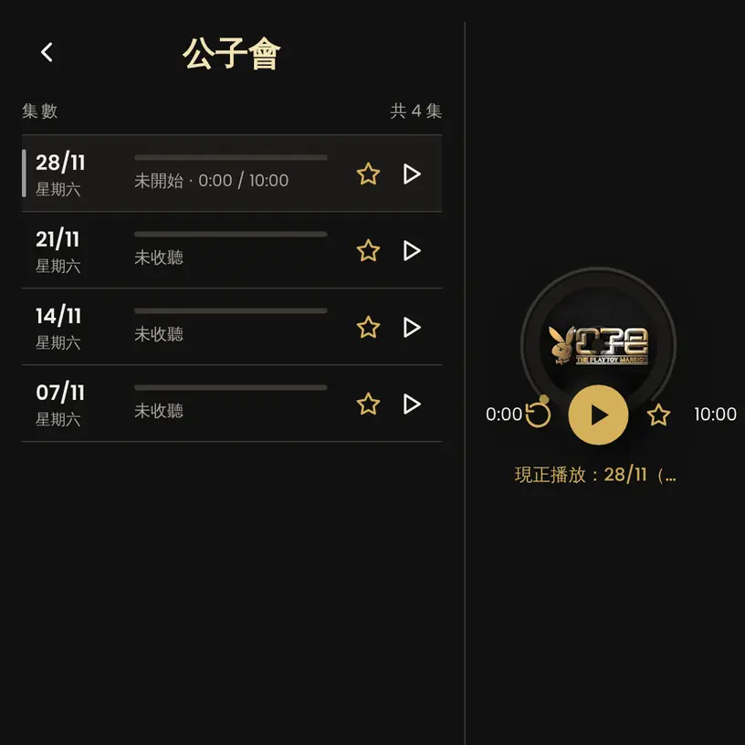

HomeView 方形版面
P10 #9a preview gate，第 1 版。真 app（v1.37.3，e2e 假資料）喺 544 × 544 嘅截圖。HomeView 係 1088 × 1088 實體像素，假設 2 倍密度；冇 simulator、冇真機，呢個尺寸未驗證。確認之後先寫 code。
主頁
544 × 544- 現狀：正方形當直版，每頁得 2 格，9 格要揭 4 頁；播放器縮成底部一條。
- 建議：左邊節目格（3 × 3 一頁放晒）、右邊播放卡，各佔一半，同 iPad 打橫嘅主頁同一個結構。
- 建議圖係臨時 build 影出嚟：節目格偏窄、封面裁得多，正式版會將橫額搬出格外或者改 2 欄再調。
主頁


內頁
544 × 544- 現狀直版喺正方形已經放得落：播放器喺上、清單喺下，冇裁切。
- 我試過套用橫版兩欄（下面「試驗」圖）：左欄清單最少要 340px，右欄得返約 190px，播放器放唔落。
- 建議：今日節目、節目頁、廣播劇頁照用直版，唔改。
今日節目


節目頁


廣播劇頁
待確認
| # | 問題 | 我嘅建議 |
|---|---|---|
| S1 | Viewport 假設 544 × 544（2 倍密度），啱唔啱？你有冇 HomeView 嘅 simulator 或者實測數字？ | 暫時用 544；規則寫成「接近正方形而且闊 500–700px」，尺寸有出入都入到。 |
| S2 | 主頁左格右卡各佔一半？ | 做。 |
| S3 | 內頁照用直版，唔另外做方形版面？ | 唔另外做。 |
| S4 | Plan 寫「字／掣按 7 吋放大」。7 吋 544px 即每吋約 110px，同一個掣已經比手機大約四成。仲要唔要再放大？ | 唔再放大；等 9b 閒置大字畫面先處理「遠睇」。 |
- 9b 閒置大字畫面、9c 夜間低光、9d 睡眠 timer 會各自再出 preview，唔喺呢頁。
- 所有改動只寫喺新增嘅方形 media query 入面，現有手機、平板、電腦版面唔變（驗收方法見 iPhone Duo preview「現有裝置」一節）。